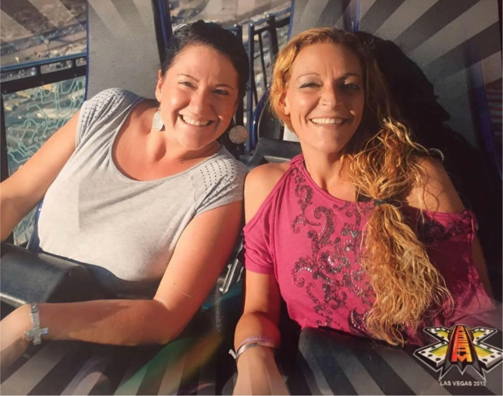

One of the happiest moments of Jessica Ahearn’s life, her mother Deborah Ahearn recalls, came when she leapt off the side of the Stratosphere Tower, a building along the Las Vegas Strip, for a 855-foot bungee jump.
Jessica — or Jess, as she liked to be called — never did anything halfway. Jess was brave, fearless on the soccer pitch and a “kid at heart,” said her sister Kristin Chauvin, of Warwick.
Magnetic, too: she loved to dance, no matter who was watching, and seemed to know the words to any song. “The most carefree spirit I’ve ever met,” is how her older sister describes her.
And she had a deep-seated connection to nature. “She loved to be outside,” her mother said. The beach, the playground, the amusement park; Jess loved the sun on her skin and the wind in her hair. Summer holidays were spent at Rocky Point, the now-shuttered amusement park in Warwick.
But Jess’s lifepath soon took on the volatile highs and lows that she had loved on her favorite roller coaster rides. A friend introduced her to heroin at Toll Gate High School in Warwick. A two-decade struggle with the steel-tight grip of addiction followed.
After graduating from high school in 1997, Jess bounced from one waitressing job to another and, according to her family, turned to crime to feed her addiction.
She gave birth to Justin, a baby boy with the same twinkle in his eyes as his mother, in June 2002. Shortly afterwards, Jess and her baby — Justin’s father was not in the picture — moved into SSTARbirth, a residential substance abuse treatment program in Cranston designed for mothers and mothers-to-be.
After a few months, Jess left the program, determined to recover on her own terms. Deborah adopted Justin.
During her stints at the ACI — of which there were many — Jess would send her sister pages and pages scrawled with song lyrics, doodles, hopes and dreams. “That was her way to get her feelings out,” Kristin said.
In 2011, hoping to shake off the grip of addiction, Jess left Rhode Island for Florida. She enrolled at St. Petersburg College and secured a job on a casino boat. She rented her own apartment and promised her family she wasn’t using. “She’s going to do it this time,” Kristin thought. She’s going to survive this.
Jess moved back to Rhode Island in the spring of 2014, despite warnings from Deborah and Kristin that she should stay put because a “toxic drug called fentanyl” had hit Rhode Island’s streets.
She became involved in her local church, held down a couple waitress jobs and bought a car. Members of Jess’s 12-step program recovery program would tell Deborah how hard her daughter was trying.
But Jess struggled to stay clean. She lost her job. She crashed her car.
“We tried as much as we could to help her,” Kristin said. “It was hard to be on that roller coaster with her.”
Jess died from an accidental fentanyl overdose on October 28, 2016 — two weeks after her 37th birthday. She was in her Providence apartment, alone.
Two days after Jess’s passing, the family had planned to gather to celebrate the first birthday of Kristin’s daughter, Kya. The party, at the Elks Lodge in Warwick, proceeded as planned; it’s what Jess would have wanted, Kristin said. During the party, the family noticed a large Monarch butterfly perched in a nearby bush.
That’s Jess, Kristin thought.
Unflinchingly, it sat patiently as Kristin stroked its bright orange wings. That had never happened to her before. The butterfly lingered as the party continued, flying from person to person as if to greet the guests.
Kristin now has a tattoo of one on her shoulder, in Jess’s honor. And she notices Monarch butterflies all the time.
And each time she sees one, she thinks: That’s Jess, thinking of me. Finally able to spread her wings and fly.
